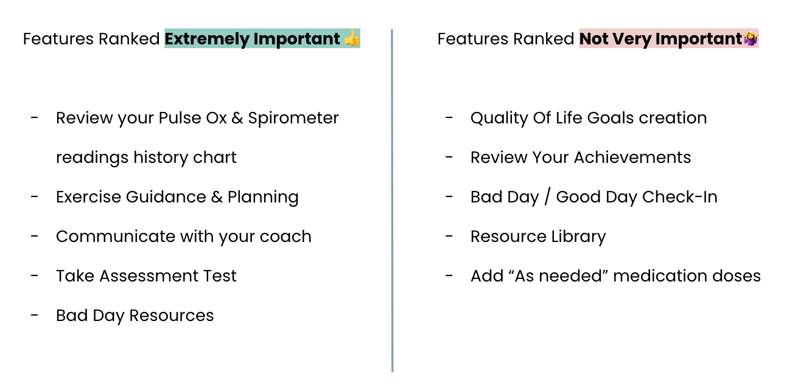

Design UXR Case Study
Card Sorting + Navigation Testing
This is a design user research project I led at a healthcare company. The high level objective of the study is to understand how and what information is useful for a new member to feel engaged in the program; and how users navigate the app when they first download it. Some information is removed or modified due to confidentiality.
Background & Goals
With chronic conditions on the rise comes staggering costs. Virtual healthcare and personalized management breaks down barriers for the patients, providing the value-based care they need at home, leading to overall lower financial burn and better outcomes. Our app and digital care service had already been used by the patients in several clinical trails. To make users more engaged in the program during the next clinical trail, clinical team, engineering team, and design team all purposed new features and designs.
The cross-funtional team needed user research to back the product decision and prioritize the feature roll-outs, given the limited time and resource. Some of our key research goals are:Generative Research Goals
Design Research Goals
Research Process
Throughout the project, I collaborated with engineers, designers and clinical leads to ensure the research covered all the pressing questions we had. Here is the overview of what our process looks like.
Methodology
-
We combined 2 card-sorting activities (1 open ended + 1 close ended) and a navigation test in an 1 hour session.
-
- 10 potential users recruited from UserInterview.com
- Age: 51-78
- Gender: 6 female; 4 male
- Chronic Disease Length: 5 users under 5 years; 5 users over 10 years
Research Methods
Participants & Demographic breakdowns
Importance Card-sorting
-
First, we asked the participants to sort cards into 3 different categories: extremely important, moderately important, not important. We asked the participants to tell us why they categorize the card into specific category. At the end of the activity, they were asked to pick the "TOP 5" features that are most important to them and their disease management.
-
The cards were ranked by how many times they were put in different categories. To avoid the central tendency bias, the "top 5" features responses and the "not important" features responses are considered most reliable.

User comments on why they think the feature is important or not important are analyzed by themetic coding.
Let's dig in!
8 out of 10 potential users are interested in seeing their assessment trends.
would be nice to know if I’m getting better or worse or just staying right where I’m at
If it's going to identify factor that could be something that's changing, then you definitely would want to discuss it with your physician
7 out of 10 potential users think communicate with your coach is important.
It’s important to set goals, and to check with health coaches about feasibility
sharing triggers and episodes with the coach would be important because they might have advice about that...
6 out of 10 potential users are interested in exercise guidance and planning that are tailored towards their personal needs and chronic disease stages.
You need to have coaches that help you get what exercises fit those of your physical limitations. Things you can do in bed, etc
6 out of 10 potential users wants to have more interactive experiences.
if it was more interactive with me because your lives get busy and you forget If we could have notification for all those tracking, that would be awesome
6 out of 10 potential users think resource library is not important.
useful for people at the beginning; useless for me I'm five years in and I've already spent a lot of time googling what's going on and stuff
No, the internet will provide the same information.
Potential users have mix feelings on the importance of support group.
Unfortunately, I have found in many instances that [support groups] there can become pardon the term *itch sessions
Everyone in the support group has gone to PR and the support of having other people also going through it. When you go home, you’re the only one w/ that disease
Data Synthesis & Insights
Conceptual Card-sorting
-
We asked the participants to group cards into categories that make sense to them, and label each category by themselves. During the activity, participants are encouraged to think aloud and explain their thought processes.
-
The groups created by the users were then being grouped into larger themes. Below are the results of the analysis.

Data Synthesis & Insights
Navigation Test
-
The participants were asked to, first tell us their feeling of specific designs “What do you expect to see on the Home page? What about the Help page? The Talk page?" Then, they were asked to perform specific tasks, such as "Can you show me how to add a new to-do?”
-
I put users' comments of the design, and how successful the task performances are into a spreadsheet. The success of a task is measured by wheter or not the task is completed, and the steps the users took to complete a task.
Overall, I found
- “Help” vs “Talk/Chat” button has overlapping expectations. 4 participants expected specifically to be able to talk to their coach in the "Help" tab, while 6 participants mentioned using the “Talk” page when help was needed.
- FAB button is confusing to the potential users. Only 1 participant said they would use the FAB to add a new reading, while 8/9 participants expressed confusion over what the FAB would do.
- In terms of the scheduling appointments expectation, Users expect to view an upcoming health coach appointment on their home page, and to schedule a new appointment somewhere else (talk tab/help tab)
- Current home page design meets expectation. Potential users are satisfied with the design.
Data Synthesis & Insights
Recommendations
Short Term Next Steps
Long Term Next Steps
Impacts
My Role
Stakeholder Meetings + Presentations
Right from the beginnig of this project, we held several brain-storming sessions to get input from different stakeholders. With the help of the designer, product manager, clinical advisors, and engineers, I was able to set up a study plan, and took first crack in designing research process. Every key stakeholders are imvolved in the research from start to end. They were invited to sit in the actual testings as silent observer or note takers. I presented the research results to both the cross-functional team, and the executive leadership team. Also, I was able to kick-off new research projects based on this UXR design research's recommendations.